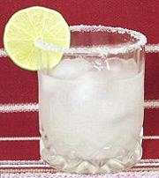

|
Margarita, "Original"Mexico - Margarita | ||||
| Serves: Effort: Sched: DoAhead: |
1 * 5 min No |
A cocktail from Mexico, of disputed origin but now widely popular. This is a very simple recipe, and simple recipes depend on quality ingredients. | |||
|
2 1 1 ar ----- ar ar |
oz oz oz --- |
Tequila (1) Triple Sec (2) Lime Juice, fresh Ice -- Garnish Lime Slice Salt (3) |
|